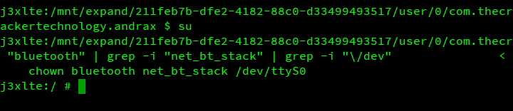
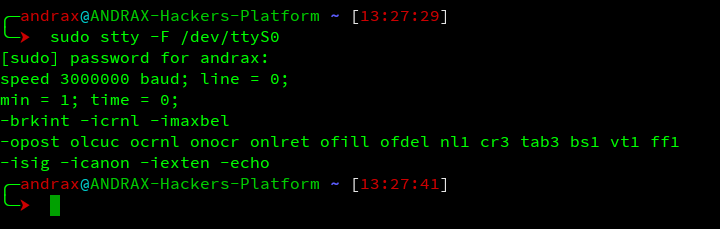
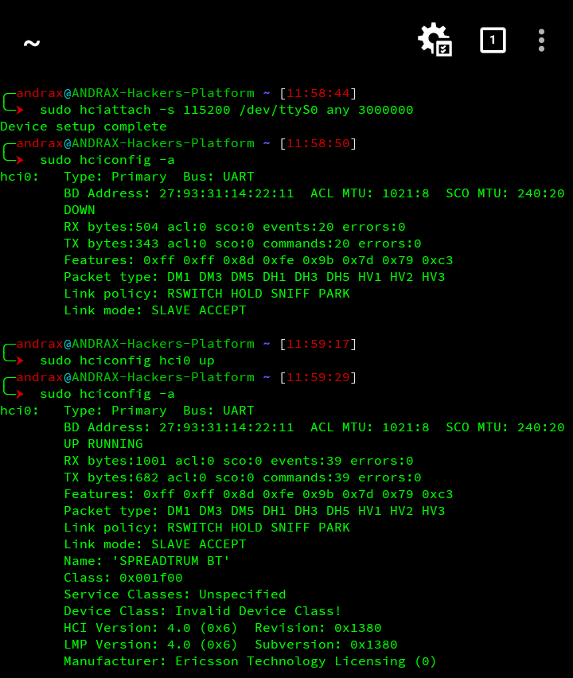

Android has the best Bluetooth chipsets!
Android has a SoC with a powerful Bluetooth chipset with modern BLE capabilities, you don't need use a external Bluetooth adapter as dumbs do! You just need your smartphone!
How to enable Bluetooth in ANDRAX
Android interact with the Bluetooth module using a serial port device who is created by the SoC Bluetooth driver, this allow us kill the Android Bluetooth interface and enable our own HCI interface attaching to this serial port, by this way we have a so fast connection with our Bluetooth module the connection speed is faster than any external adapter! (ANDRAX in top, again!)
Finding the serial port
Find the serial port to use in Android is pretty easy, everyone can easily find it without any help... but if you are a dumb created by Offensive Security we will help you!
Just past the following commands on a ANDRAX recovery shell and you will be able to find your device serial port for Bluetooth connections:
su
cd /;cat *.rc | grep -i "bluetooth" | grep -i "net_bt_stack" | grep -i "\/dev"
After run the commands you will see a result like this:

Now you know that your serial port for Bluetooth connections is located at "/dev/ttyS0", whats next?
The serial speed
Now we will need attach to the serial port but to do that you need discover the "baud" speed of the serial port, we will go back to the ANDRAX shell and past the following command:
sudo stty -F /dev/<your serial port>
You will be able to see the result like this:

As we can see my Bluetooth chipset have the speed of 3.000.000 bauds per second (bps) or 3 Megabits per second which is a very, very high speed for a local physical connection!
We will use a low range speed because this chipset speed is shared with the entire modem SoC, this mean that is used by Mobile Network, WiFi, Bluetooth and any other type of connectivity chipset like NFC.
For 99.9% of attack types we will use the speed of 115200 bauds per second that is more than a good speed.
Attaching to the serial port
We will use hciattach to attach to the serial port and create a hci interface, the basic syntax of the hciattach command is:
sudo hciattach -s 115200 /dev/ttyS0 any 3000000
- sudo: To get root privileges
- hciattach: The command to attach to the serial port
- -s 115200: The initial speed to we work
- /dev/ttyS0: The serial port device block
- any: The device manufacturer type
- 3000000: My real device speed
We have the device setup complete, now we will power up the interface with hciconfig, hciconfig has a syntax similar with the old ifconfig:
sudo hciconfig hci0 up
- sudo: To get root privileges
- hciconfig: The command to manage the interface
- hci0: The interface to power up
- up: The subcommand to up the interface

Now everything is fine, our hci interface is up and running.
To remove the lock and get you Android bluetooth working again just restart your device.
Learn Ethical Hacking
If you want to become a professional, join our Advanced Ethical Hacking Training: JOIN NOW!